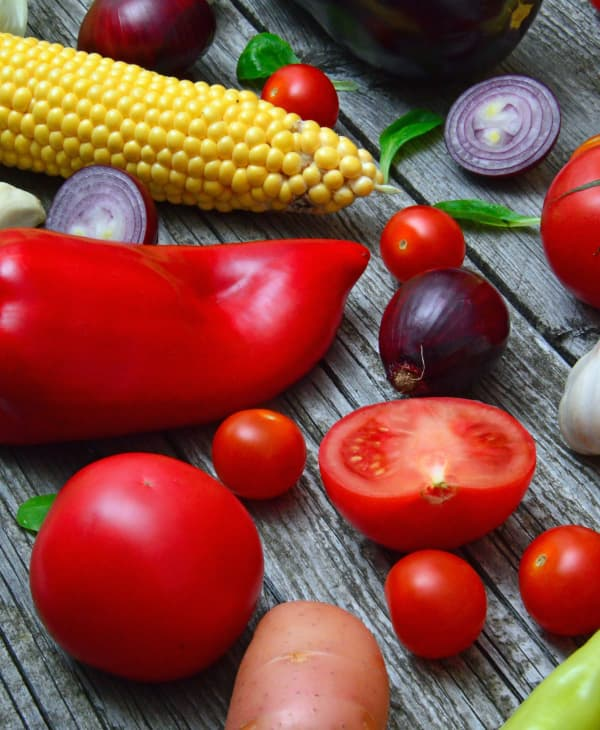

Legumes
Denominação genérica das plantas cultivadas para alimentação humanaA domesticação de plantas para a produção de alimentos começou há milhares de anos, à medida que as sociedades humanas se tornaram mais sedentárias e começaram a praticar a agricultura. Ao longo do tempo, diferentes regiões do mundo desenvolveram suas próprias culturas agrícolas e selecionaram plantas que eram adaptadas às suas condições climáticas e de solo.
Legumes como cenouras, batatas, brócolis, tomates, entre outros, foram cultivados e aprimorados ao longo das gerações por agricultores em diferentes partes do mundo.

Em geral, legumes são conhecidos por apresentarem ciclos de crescimento relativamente curtos em comparação com outras plantas. Tomates e pimentões geralmente levam de 50 a 85 dias, dependendo da variedade e das condições climáticas. Legumes de raiz, como cenouras e beterrabas, podem levar de 2 a 4 meses para se desenvolverem completamente.
Com média de aproximadamente 50 calorias por xícara, eles oferecem uma opção nutritiva para quem busca controlar o consumo calórico. Ricos em vitaminas, minerais e fibras, os legumes são aliados ideais para uma alimentação equilibrada, contribuindo para a saúde sem comprometer a contagem de calorias.
“Seja um 'legume-tariano': faça escolhas alimentares que nutrem seu corpo e sua alma.”
- Categoria: Legumes
- Surgiu: 12.000 anos
- Cultivo: 30 - 120 dias
- Média calórica: 47 kcal
- Preço médio: R$ 6,65 Kg
Plantar legumes em quintais requer a escolha adequada de variedades para o clima local, preparo do solo com boa drenagem e adubação. Siga as orientações de plantio, mantenha o solo úmido, remova ervas daninhas, aplique fertilizantes, proteja contra pragas e forneça suporte quando necessário. Colha os legumes quando maduros e pratique a rotação de culturas para preservar a saúde do solo. Cultivar legumes em casa oferece acesso a alimentos frescos e fortalece a conexão com o crescimento das plantas.